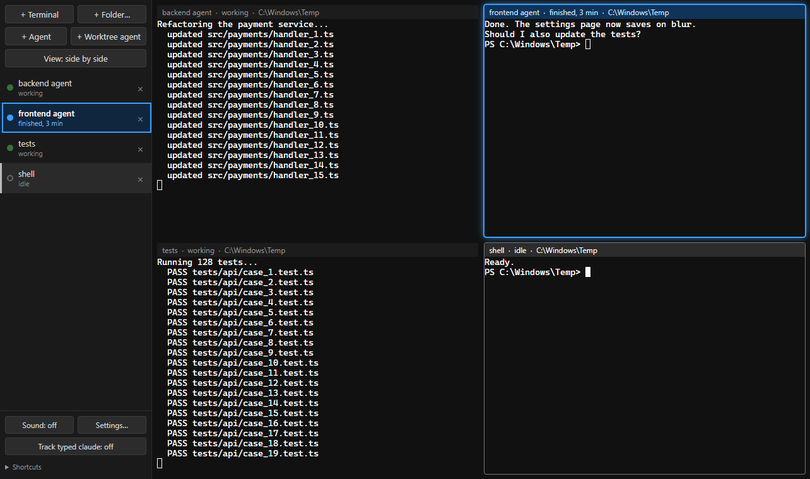

Know which agent needs you.
Klyngex runs your coding agents side by side in one window. The one waiting for an answer gets a blue ring.
Free and open source. macOS and Linux support is coming.
This is how it behaves. Click a terminal with a ring to answer it.
Every agent in view
Two, three or nine terminals share the window and always fill it. Zoom one to full size when you need to read closely, then step back out.
The ring means it is your turn
A terminal is ringed when its agent has finished or is asking for permission, and it says which and for how long. The ring stays until that agent is working again.
Exact for Claude Code
Claude Code reports to Klyngex the moment it stops or asks. Any other program is followed by its output, so other agents and plain shells work too.
Agents that do not collide
Start an agent in its own git worktree and it gets a separate copy of the repository on its own branch. Several can work on one project at once.
Picks up where you left off
Close Klyngex and open it again: the same folders and names are back, and Claude Code sessions reopen with their conversation.
Told even when you are elsewhere
When the window is in the background, the taskbar flashes and a notification names the agent that is waiting. An optional tone does the same for your ears.

Run it from source
Klyngex is MIT licensed. You need Node.js 20 or newer, and Claude Code if you want the agent buttons.
git clone https://github.com/SondreGarnes/klyngex.git cd klyngex npm install npm start
If Klyngex is useful to you, please star the repository on GitHub. It helps other people find it.